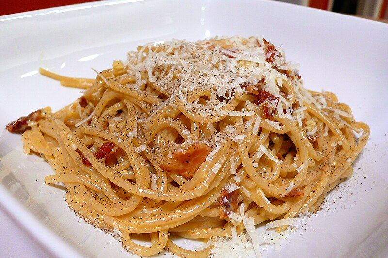

Carbonara Pasta Recipe

Description
Carbonara is a traditional Italian dish, it derives from a nutritious yet simple dish that was cooked for coal mine workers, from the Italian carbone, meaning coal.
Ingredients
- 200g Spaghetti
- 3 eggs
- 100g Guanciale
- 30g Pecorino Romano
- 10g Table Salt
- Black Pepper to taste
Steps
- Bring a pot of water to a rolling boil
- Add 10g of salt
- Cut guanciale into thin strips
- Put the guanciale stripes into a heated pan, cook until fat turns transparent
- Pour 1 egg yolk and 1 full egg into a bowl, agitate them well
- add pepper and pecorino to the bowl, amalgamate with a wooden spoon
- Once the pasta is cooked al dente, strain it and add it into the bowl
- Place the guanciale with the fat into the bowl and mix well
- Sprinkle pecorino cheese to taste